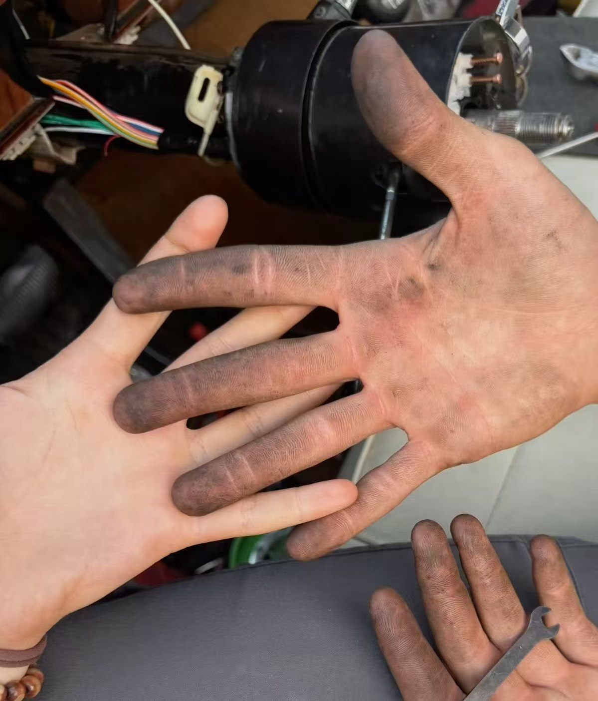
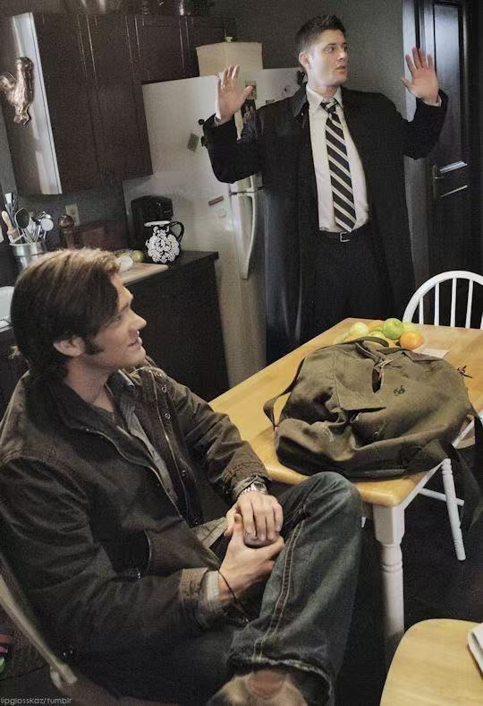
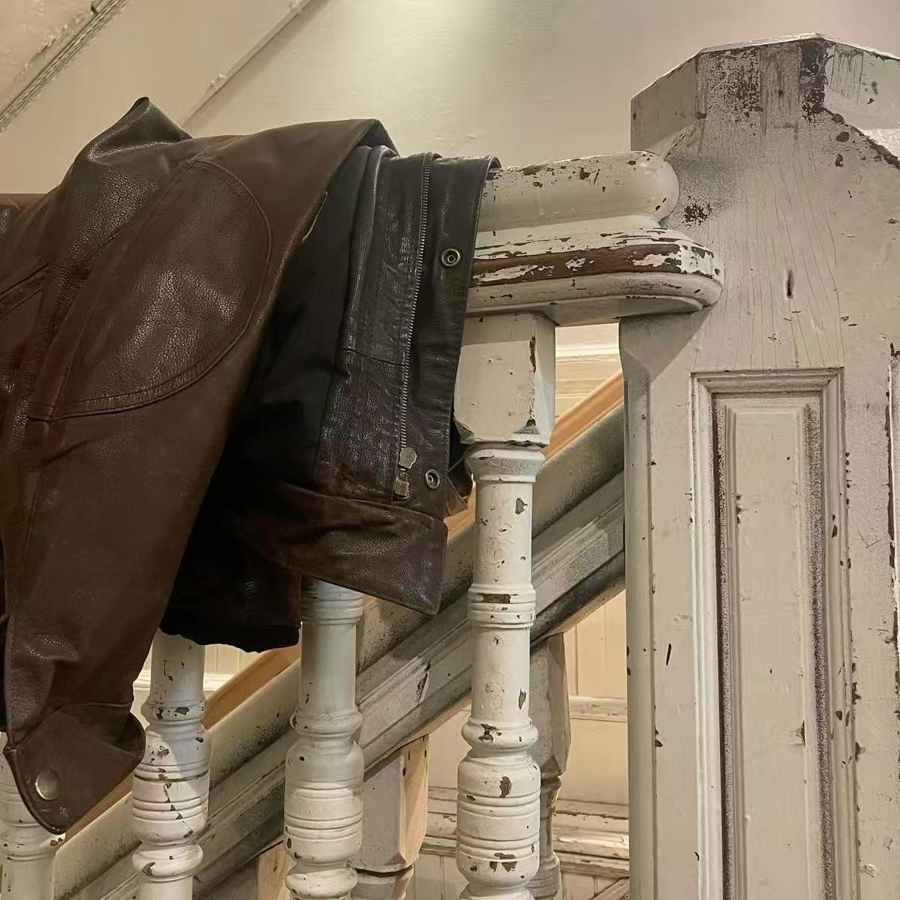
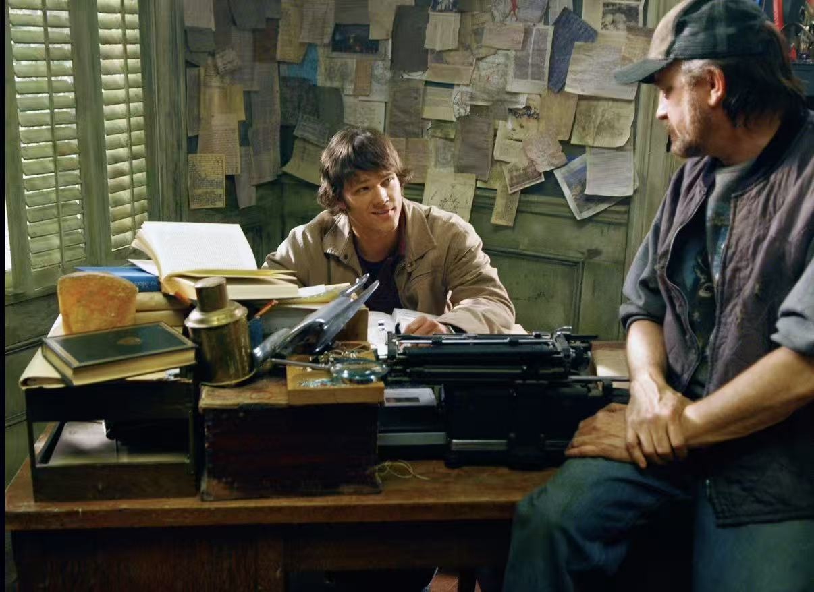
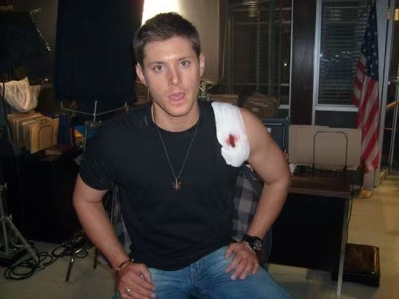

MEMORY 01
A NOTE BESIDE THE PHOTO
勉强留下的照片
这个人喝醉了，拿着枪到处玩……我和小米两个人都拦不住。但是这张照片很萌，勉强留下吧。
A LITTLE ARCHIVE OF US
我们的日常/一些值得记录的小事
MEMORY 01
A NOTE BESIDE THE PHOTO
这个人喝醉了，拿着枪到处玩……我和小米两个人都拦不住。但是这张照片很萌，勉强留下吧。
MEMORY 02
A NOTE BESIDE THE PHOTO
这是我们一起去上海的时候，他在等飞机，装模作样地在看书。但是冷脸萌。
MEMORY 03
A NOTE BESIDE THE PHOTO
这张是在等着洗车。前两天开进泥地了，宝宝变得特别脏。
MEMORY 04

A NOTE BESIDE THE PHOTO
这是他又在修车，手上全是机油。我叫他把手拿出来，我俩对比一下：我的干干净净，他的手要脏死了！
MEMORY 05 · SALT LAKE CITY
A NOTE BESIDE THE PHOTO
这是几年前的照片了。我们在盐湖城办案子，应该是9月20号。某人一直说不喜欢狗，但是有小狗蹭上来，还是忍不住贴贴。Motel门口遇到的两只法斗，一只叫Bucky，一只叫Becky，太可爱了。“I've always liked dogs. I just don't want to own one because they're too much work.”
MEMORY 06 · AROUND 2013

A NOTE BESIDE THE PHOTO
这是13年左右，我忘了我们在做什么了。大家聚在一起聊天，突然聊到什么事，好像是Charlie说的，老丁就在那说：“Guilty is charged.” Sam怎么一脸绝望？但是这张又萌又帅啊。
MEMORY 07 · SEPTEMBER 9

A NOTE BESIDE THE PHOTO
9月9号的时候我给他买了件夹克，认真的说，完全是为他量身定做的！Anyway，自从那之后他就经常穿这个出门。没过多久，我终于在Zara买了件合适的皮衣，我们俩一起穿情侣装出去，给他乐坏了……
MEMORY 08 · 2007

A NOTE BESIDE THE PHOTO
这张是我拍的！2007年的时候，镇子上有狐妖，Sammy和Bobby正在商量对策。
MEMORY 09

A NOTE BESIDE THE PHOTO
某人又受伤了……被我念叨还不乐意，也不看看自己伤得多重，我真服了。
MEMORY 10 · Kansas
A NOTE BESIDE THE PHOTO
当时我回旧金山了，我爸和我哥来串门。他们又在那里享受boys night……留我一个人在旧金山苦苦挣扎。你们偷偷玩就算了！这几个人还专门给我拍照！太过分了！！！！！！
DIARY · 填写日期
这块留给不需要配图的日记。准备好后，把这段提示文字替换成正文。